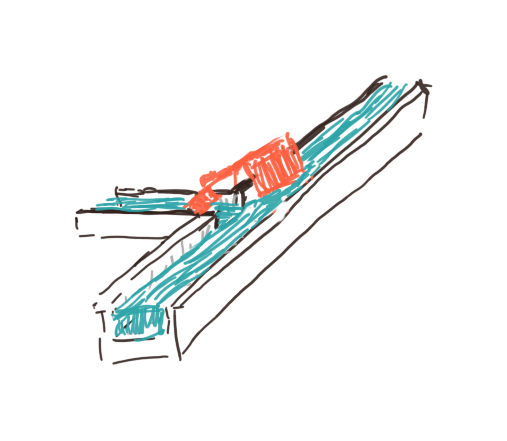
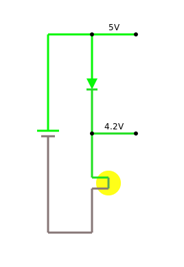
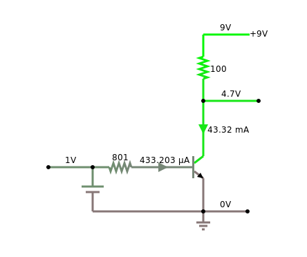

|
|
 |
Active Components
This chapter is about active electronic components, such as diodes, LEDs, and transistors. We learn about the different type of diodes that there are and what they are used for. We get to know transistors, bipolar and field-effect, and how to use them as switches and as amplifiers. We get to see the multivibrators, especially the astable and the bistable, and learn why they are so important for computers.
.
Diode
The diode [1] is the most basic active component. It is made of a semiconductor material with what is called a p-n junction [2]. Diodes have the nice property, that they let current only go one way, from anode to cathode. Let's take a look at this in our simulator:
|
 |
You may notice this interesting voltage drop of 0.7 volts accross the diode. This is also known as the "forward bias" [1]. This is typical for a silicon semiconductor, and we will see this a few more times in the future. Germanium diodes have a voltage drop of about 0.3 volts.
Diodes have many uses, such as
- constant voltage source,
- current steering,
- over-voltage protection,
- temperature sensor and
- rectifier.
We will not talk about the rectifier, since that has to do with AC, but we will see examples for all the other usages.
.
Constant Voltage Source
We just learned that a silicon diode has a voltage drop of 0.7 volts. This can actually be used to create a constant voltage source. If we connect three diodes in series, the voltage drop will be three times 0.7 volts, that is 2.1 volts. Depending on whether we have the diodes before or after the resistor, we can use them in two different ways:
.
Current Steering
Diodes are also very useful in protecting sensitive electic circuits from somebody accidentally switching plus and minus, i.e. they can be used to allow current to flow only in one, the intended, direction:
Just so that you know, this last circuit, protects our multimeters when you happen to measure current in the wrong way. Meaning the way that "breaks" the multimeter. Lucky for you, most multimeters are protected by this circuit, and all you have to do is to replace the fuse, and your a good to go.
.
Over-Voltage Protection
They also can be used for over-voltage protection, especially when dealing with motors or relais (flyback diode):
.
Temperature Measurement
The voltage drop of 0.7 volts that we already heard about, actually depends a little on temperature for most diodes. For silicon diodes it is usually -2 mV/˚C. So if we very carefully measure this voltage drop, we can measure the temperature.
.
Current-Voltage Characteristic
At this stage it is time to learn about what is called the current-voltage diagram, also called the "I-V characteristic". Basically, we change the value of the voltage going through our diode from some negative voltage to some positive voltage, and measure the current. (Naturally, the current should not be to high, or our diode will start to go up in smoke.) When plotting the result in a graph, we will get something like the diagram to the right, which is called a current-voltage diagram.
Usually, we will not measure these diagrams ourselves, but look them up in so-called data-sheets [4]. The manufacturers of the components usually provide them.
.
Light Emitting Diode (LED)
LEDs are diodes that emit light [5], however, only if connected in the right direction, because like diodes, they let current only pass in one direction.
Most LEDs need to be protected, if the current through them gets to high, they break. This is why we usually use a current-limiting resistor to protect them.
.
Zener Diode
.
We already saw how to use a normal diode to create a source of constant voltage. Only, that voltage wasn't quite as constant as we would have wanted it to be. That is why there is a special diode called the Zener diode [6]: its only purpose is to create a constant voltage. It is based on the Zener effect. Normal diodes will block any current, that goes in the wrong direction, i.e. from cathode to anode. But a Zener diode will block it only to a certain voltage, if the voltage, however, increases above that value, it will no longer block.
For us, Zener diodes are important, because our Arduino, the MKR1000, only likes 3.3 volts as its voltage. Most USB power supplies, however, produce 5 volts. So with a Zener diode, we can turn 5 volts into 3.3 volts. There are Zener diodes available for all kinds of voltages [7].
.
Transistors
Although diodes are already pretty neat, transistors are what we really want to learn about. Transistors can act as switches and as amplifiers. The simple diagram below, visualizes how they work: a small current of water, the pipe coming in from the left, controls the flow of the water in the big pipe. If there is no flow coming in from the left, the main water pipe is blocked. Only if water flows in from the left, will the gate open, and release the main stream. This is a very crude analogy, but a very helpful one.
|
|
|
.
Bipolar Transistor
The bipolar transistor was invented in 1947 by American physicists John Bardeen, Walter Brattain, and William Shockley at Bell Labs [9]. It has transformed our lives like no other electronic device, and probably is on par with the invention of the fire and the wheel. It is surprisingly simple, made up of two semiconductor junctions (npn or pnp).
A transistor has three terminals, called base (B), collector (C) and emitter (E). The defining feature of a transistor is that a small current flowing into the base terminal, can control a much larger current flowing from the collector to the emitter terminal. Hence it can be used either as a switch or as an amplifier.
.
Transistor as Switch
If you want to use the transistor as a switch, all you have to do put a small voltage on the base terminal, usually a little more than 0.7 volts for a silicon transistor:
|
|
If the base voltage is less than these 0.7 volts, the transistor is off, meaning no current is flowing between collector and emitter. However, if the base voltage is higher than about 0.7 volts, than the transistor is on, meaning a high current is flowing between collector and emitter.
.
Transistor as Current Amplifier
In addition, a transistor can be used as an amplifier, which is its most important application. There are three configuration to do that, and they are called
- common base,
- common emitter, and
- common collector.
Since the first one is hardly used, we will not talk about it. The second one is the most common one, and the last one is also used quite often.
You can remember which is which, by looking at the emitter of the transistor: if the emitter is connected to (common) ground, then it is common emitter. Although the diagrams look almost the same, the two amplifiers have somewhat different properties. We put those differences together in one table [10]:
| common emitter | common collector | |
| input impedance | medium | high |
| output impedance | high | low |
| voltage gain | medium | low |
| current gain | medium | high |
| power gain | very high | medium |
| phase shift | 180º | 0º |
| typical use | switch, amplifier | impedance matching |
So depending on what you need, you pick one or the other. If you are not sure, go for the common emitter.
.
Transistor as Voltage Amplifier
First and foremost, bipolar transistors amplify current. But what if we want to amplify voltage? Well, with a resistor and Ohm's law we can turn voltages into currents:
But, in addition we need to remember, that the voltage drop between base and emitter has to be around 0.7 volts. We can do this by adding something like 0.5 volts to our input signal with a voltage divider (that is two resistors).
Once we have that, we can amplify voltages. In the example below, we amplify an input voltage with a range of 0 to 0.9 volts into an output voltage of 0 to 9 volts, that is an amplification by a factor of 10.
|
 |
You may notice the phase shift of the common emitter circuit: the 0V input voltage is turned into a 9V output voltage and the 0.9V input voltage is turned into the 0V output voltage.
.
Field-Effect Transistor (FET)
Besides the bipolar transistors, there are also the field-effect transistors (FET) [11]. In principle, they are quite similar. The main differences is, that one, the terminals of FETs are called source, drain, and gate (corresponding to emitter, collector, and base, respectively), and two, they are triggered by voltage and not by current. Meaning no current has to flow through the gate for the transistor to switch. It basically turns voltage into current:
This has an interesting consequence that you should be aware of: the bipolar transistor will only be "on", when a current is flowing. Not so the FET. To see this, consider the following circuit:
If you replace the FET in the circuit above with a bipolar transistor, you will notice the difference. To see the effect in practice, watch video [12] starting at position 5:00 minutes. Also notice the different voltage it needs to be turned on and off.
Why are FETs, especially MOSFETs, so important? Because they can be fabricated much smaller then bipolar transistors, and therefore basically all integrated circuits are made with FETs.
It is not a book on
.
Multivibrators
Three very interesting circuits that we can build out of transistors, resistors and capacitors are the multivibrators [13]. They are interesting because we need them to build a computer. The astable multivibrator generates the clock cycles for our computer, and the bistable multivibrator is the basic unit that stores the bits in the memory of our computer, i.e. the RAM.
.
Monostable Multivibrator
We start with the simplest, but also most useless of the multivibrators, the monostable multivibrator. When you close the switch in circuit below, the dark LED will lighten up, but after a while, the other LED will turn on again, and stay on. So one of the two LEDs (two states) is the stable state, hence mono-stable. It is not totally useless, and its usually used to turn a rather short signal, into a longer signal of a fixed time interval.
.
Astable Multivibrator
Next up is the astable multivibrator. Again, it has two states (or LEDs), but the interesting thing is, that it keeps on switching back and forth between the two states, i.e., none of the states is stable, that is astable. This is a frequency generator. It can be used to generate the clock-cycles for our computer. Depending on the values for the resistors and capacitors, basically any frequency can be generated. We can also use it to create a blinker or we can use it to create sound, if the frequency is high enough.
.
Bistable Multivibrator
Finally we come to the bistable multivibrator, also called flip-flop. Again, it has two states (or LEDs), but this time, both of the states are stable. When we close the "reset" switch, the LED is off. When we close the "set" switch, the LED turns on. And stays on, until the "reset" is closed again. And this is the type of circuit that your computer uses to store information, one bit to be exact.
.
Logic Gates
The other important application of transistors are the logic gates [14]. In the second chapter, we have seen how to build them out of switches. Since transistors can act as switches, it is not surprising that we can build them also out of transistors. Below you see all the logic gates build with transistors, we start with NOT, AND and OR,
|
|
continue with NAND and the NOR,
and notice, that we can turn the NOT-XOR into an XOR by inverting its output with a NOT gate:
In the research section, we will talk a little more about the NAND gate and its profound philosophical implications.
.
Review
In the lines above, we focused on active components, such as diodes and transistors. To be more exact, we saw silicon diodes, LEDs and Zener diodes, as well as bipolar and field-effect transistors. We learned that diodes can be used as constant voltage source, for current steering and over-voltage protection, even temperature measurement. We now know how to use transistors as switches and as amplifiers, with the common emitter and common collector circuits. Finally we learned about the multivibrators, and towards the end build all the logic gates out of transistors. Again, pretty amazing what we accomplished.
.
Labs
In todays lab we will learn about active electronic components such as diodes, LEDs and transistors.
.
Preparations
Before attempting to perform any of the experiments in this lab, you need to have done the following preparations beforehand. You have to be able to
- measure current with a multimeter,
- find the direction of a diode and an LED,
- identify B, E, and C on a bipolar transistor.
.
Note to Instructors
Equipment: Alligator clips, Arduino box, multimeter, engineering paper, Zener diode 1N5226, bipolar transistor BC547. Experiment 2 should be done in groups of four students since two multimeter are needed.
.
1. Diode
Equipment: Arduino box, multimeter.
First, take a diode and measure its resistance. Notice, that a diode has an anode and a cathode. Identify each, and measure the resistance in both directions.
Second, diodes can be used to create a source of constant voltage. Use two diodes and a resistor (!) to create a voltage source of 1.4 volts.
Third, use a diode for current steering: build the circuit "diode protection series" from class. Instead of the light bulb use a motor. You should notice, that no current is flowing when you switch the poles of the battery.
TODO: not sure if the following circuit is really useful, since diode is in the wrong way
.
2. Current-Voltage Characteristic of a Diode
NOTE: this experiment should be done in groups of four students.
Equipment: Arduino box, multimeter, engineering paper.
Important: If you destroyed a multimeter in the last lab, because you did not understand how to measure current, you should not attempt this experiment.
First take a look at the datasheet for the 1N4007 diode [16]. Notice that on the 3rd page it shows several diagrams for the current-voltage characteristic of that diode. We want to repeat one of those measurements.
Before startung make sure you read reference [17]. You need to be able to create voltages between +9 volts and -9 volts. In experiment 6 in lab 3, we created a continuous voltage source that can give us voltages between 0 and 9 volts.
Before attempting to do this experiment with a diode, we can do it with a simple resistor. Use maybe a 10 kOhm resistor. Change the voltage from +9 to -9 volts, in one volt increments, and measure the current flowing. Write down your measurements in a table, and the graph the table. You should get a straight line.
Next, use the diode instead of the resistor. Again modify the voltage, but this time, in the forward direction we need voltages between 0 and 1.0 volts, ideally in 0.1 volt increments, and in the blocking direction we need voltages between 0 and 9 volts, ideally in 1 volt increments. Again, write down your measurements in a table, and then graph it. You should get a graph like the one on the right.
.
3. Light Emitting Diode (LED)
Equipment: Arduino box, multimeter.
An LED is a diode that emits light. Most LEDs (at least the ones we are using) need protection through a resistor. In experiment 3 of Lab 3 we calculated how much resistance is needed for a given voltage. In general, the current flowing through a LED should be less than 20 mA.
First, connect a red LED to the 9V battery in series with its protective resistor. The LED should light up. It will do this, only if connected in the correct way (cathode should be connected to minus). Next, use the multimeter to measure the voltage drop across the LED (should be something like 1.9 volts). Finally, replace the LED with a different color LED. Notice that the voltage drop depends on the color of the LED.
Second, LEDs can also act as light detectors. Measure the resistance of an LED in the forward direction. Now shine on it with a bright light (smartphone flashlight). You will notice, that the resistance increases, depending on the brightness of the light.
As an interesting side note, it is possible to measure Planck's constant measuring voltages and currents of differently colored LEDs [21].
.
4. Zener Diode
Equipment: Arduino box, multimeter, Zener diode 1N5226.
The Arduino we are using, uses 3.3V for its power. Most power supplies for Arduinos (like USB power supplies), and also many of the other Arduinos use 5V. As long as we stay in one world things are fine. But once we start connecting other Arduinos or sources to our Arduino, things might get problematic or rather deadly for our Arduino. Also, sometimes you find circuit diagrams on the internet that you might want to use with your Arduino. But before you do that, make sure you understand for which Arduino this circuit diagram was intended.
However, not all is lost. Because we can use a Zener diode to protect our Arduino. For example, the 1N5226 is a common 3.3V Zener diode which we can use to protect our Arduino. Check out reference [22] and read the "Level Shifting With a Zener Diode" paragraph. Then build the following circuit, and test if it works.
What you want to measure is the voltage accross the Zener diode. You should change the value of the resistor (maybe 220 Ohm, 1kOhm, 10kOhm) and measure the voltage for each. You should notice that the voltage stays close to the 3.3 volts. Our Arduino input is protected!
.
5. Bipolar Transistor
Equipment: Arduino box, multimeter, transistor BC546.
First, you need to find the transistor's data sheet [23]. Use it to identify base, emitter and collector of your transistor.
Second, make sure to always protect the base with a protective resistor. If you don't, your transistor goes ka-boom.
Third, find out how to use the multimeter to test if a transistor is NPN or PNP, and your transistor is fine or already broken. Note the hFE your multimeter displays. Find what the hFE should be for your transistor in the data sheet.
Fourth, to get started, connect the motor directly to the 1.5 volt battery. Notice, that it moves rather slowly. Then connect it directly to the 9 volt battery. It is going quite a bit faster.
Finally, build the circuit below. Notice, that the motor turns pretty fast. Change the resistor to 100 Ohms (put two 220 Ohms in parallel). The motor now should turn as fast as if it were directly connected to the 9 volt battery. DO NOT MAKE THE RESISTOR SMALLER THAN 100 OHM!
If you are good at using the ammeter (i.e. you haven't broken one yet), you can measure the current going through the motor (use the 10A setting). You can compare that to the current going into the base of the transistor (use the 200mA setting). I measured a current of 140 mA going through the motor and of 1.3 mA going into the base of the transistor. Hence the amplification is about:
$$amplifcation = {140 mA \over 1.3 mA} = 107.$$
Looking at the hFE we measured (or looked up) we would expect a little more, but close enough.
Question: What is the hFE of the Darlington transistor TIP120 [24]?
.
6. FET as Switch
Equipment: Arduino box, multimeter, FET IRF520
FETs are more robust than bipolar transistors, since they do not react to current but voltage instead. This means we can directly connect the gate to 9 volts of the battery without destroying it (a bipolar transistor would not survive this).
First, check out the datasheet [25,26] and use it to identify the gate, drain and source terminals of your FET. Then find out what the "Gate-Source Threshold Voltage" is. You need to apply at least this voltage for the FET to switch.
Second, find out if you can use the multimeter to test a FET transistor. It probably will not work. Is there another way?
Third, build the "fet switch" example below. Notice, what happens when you connect the gate to 9 volt, and what happens when you connect it to 0 volt, i.e. the minus pole of the battery.
Finally, try the following: using the circuit above, make sure the motor is turned of. Now rub your feet on the floor, and then touch the gate terminal of your FET. With some luck, the motor will turn, because the static electricity generated by your feet is high enough to turn on the FET. (Nowadays, FETs are usually protected against static electricity. If they weren't you would have just killed it...).
Question: What are the advantages of a bipolar transistor, and what are the advantages of a FET transistor?
.
7. Multivibrators
Equipment: Arduino box, multimeter, transistor BC546.
First, recall how capacitors work. When you charge them, and then discharge them, the voltage decreases slowly, following an exponential decay. Then build the circuit below. You will notice that when you close the switch, the LED goes on (use a yellow LED for best results). As you release the switch, you will notice that after some time, the LED gets dimmer slowly, until it goes off. Depending on the 220 Ohm resistor and the capacitance, this will take a different amount of time. This is the basis for the multivibrators.
Now we are ready for the real thing. Make sure you understand the difference between the different multivibrators. Although they sound and look almost the same, they have very different applications. Then build the astable and the bistable multivibrator. You can use the FETs instead of the bipolar transistor, they work as well. As for the astable, notice what happens when you change the values of the capacitors or the charging resistors (10kOhm). (Dont change the protective resistor or your LED will say bye-bye!)
.
Challenges
Current-Voltage Characteristic LEDs
Like with diodes, you can also measure the current-voltage characteristics for LEDs. Interesting enough, you will notice a dependence on the color of the LED. And even more interesting you can use this to measure Planck's constant [21]. Explaining this effect is what got Albert Einstein his Nobel price.
.
Current-Voltage Characteristic Transistors
Transistor-Kennlinienfelder, Like diodes, transistors too have current-voltage characteristics. We will take a brief look at those in the labs [27,23,26]. You can actually measure them yourself.
.
Research
Sheffer Stroke
A few pages ago we mentioned that the NAND gate is very special [29]. Mathematicians actually call it the Sheffer stroke [28]. Why is it so special? It turns out that all other logic circuits, that is the NOT, the AND, the OR, even the XOR and the NOR can be build out of NANDs. This is totally unexpected. Interesting enough, the Sheffer stroke is what Mathematicians call funcionally complete [30]. Knowing this and having heard about the Principia Mathematica [31], one may marvel at the simplicity of the creation.
.
Questions
-
How can you determine whether a diode is a silicon or germanium diode? What do you have to measure?
-
Can an LED be used as a detector for light?
- yes
-
no.
-
Suppose you are color blind. How could you find out the color of an LED by measuring something?
-
Sketch a current-voltage characteristic curve for a diode.
-
Does a bipolar transistor amplify current or voltage by default?
-
Which one breaks more easily, a bipolar transistor or an FET?
-
Please draw the diagram of a bipolar transistor and label base (B), collector (C) and emitter (E).
-
Transistors are typically used in the common emitter or common collector configuration. Draw the schematic for one of the two.
-
Identify which multivibrator is which.
-
Connect the component on the left side with its function on the right side:
TMP36 diode BC546 CPU IRF520 FET transistor 1N4004 bipolar transistor 741 operational amplifier 6502 temperature sensor
.
References
There are a few things that might be worthwhile your time. If you want to know more about how transistors work, you should read up on the p–n junction in the Wikipedia [2]. If you want to watch a good Youtube video on how to design a transistor circuit, watch reference [32] by Ben Krasnow. The difference between bipolar transistors and field-effect transistors is really nicely depicted in video [12] by Jeff Feddersen on Vimeo.
Of more general interest is the video by Manu Prakash, Computing with fluids [33]. This reemphasises the importance of the NAND gate.
And because we have been talking about people in the previous chapters, you may want to read up on John Bardeen, one of the inventors of the transistor. And while at it, might be interested to find out who else won two Nobel Prices. While at it, find the family that one six Nobel Prices!
.
[1] Diode, https://en.wikipedia.org/wiki/Diode
[2] p–n junction, https://en.wikipedia.org/wiki/P–n_junction
[3] Datei:Kennlinie Diode 1N914.svg, de.wikipedia.org/wiki/Datei:Kennlinie_Diode_1N914.svg
[4] Datasheet, https://en.wikipedia.org/wiki/Datasheet
[5] Light-emitting diode, https://en.wikipedia.org/wiki/Light-emitting_diode
[6] Zener diode, https://en.wikipedia.org/wiki/Zener_diode
[7] Zener Diode Reference, web.archive.org/web/20090216233625/http://www.logwell.com/tech/components/zener.html
[8] Spannungsstabilisierung mit Z-Diode, www.elektronik-kompendium.de/sites/slt/1012151.htm
[9] Transistor, en.wikipedia.org/wiki/Transistor
[10] Grundschaltungen des Transistors, www.elektronik-kompendium.de/sites/slt/0203111.htm
[11] Field-effect transistor, en.wikipedia.org/wiki/Field-effect_transistor
[12] Transistors - Darlingtons and MOSFETs, vimeo.com/107917397
[13] Multivibrator, en.wikipedia.org/wiki/Multivibrator
[14] Logic gate, https://en.wikipedia.org/wiki/Logic_gate
[15] LED-Wechselblinker, https://www.elektronik-kompendium.de/sites/praxis/bausatz_led-wechselblinker.htm
[16] Datasheet 1N4007, datasheet.octopart.com/1N4007-ON-Semiconductor-datasheet-642969.pdf
[17] Ermittlung der Diodenkennlinie, www.elektronik-kompendium.de/sites/bau/0201113.htm
[18] Kennlinien von Leuchtdioden, www.leifiphysik.de/elektronik/halbleiterdiode/versuche/kennlinien-von-leuchtdioden
[19] LED introduction and important terminology, www.youtube.com/watch?v=7D7CSl_WF28
[20] LED - Leuchtdioden, www.elektronik-kompendium.de/sites/bau/0201111.htm
[21] Classroom fundamentals: measuring the Planck constant, www.scienceinschool.org/2014/issue28/planck
[22] Level Shifting, itp.nyu.edu/physcomp/lessons/electronics/level-shifting/
[23] BC546 - ON Semiconductor, https://www.onsemi.com/pub/Collateral/BC546-D.PDF
[24] TIP120, https://www.onsemi.com/products/discretes-drivers/darlington-transistors/tip120
[25] MOSFET IRF520, itp.nyu.edu/physcomp/lessons/electronics/transistors-relays-and-controlling-high-current-loads/
[26] IRF520, https://www.vishay.com/docs/91017/91017.pdf
[27] Transistor-Kennlinienfelder, www.elektronik-kompendium.de/sites/bau/0203112.htm
[28] Sheffer stroke, https://en.wikipedia.org/wiki/Sheffer_stroke
[29] NAND logic, https://en.wikipedia.org/wiki/NAND_logic
[30] Functional completeness, https://en.wikipedia.org/wiki/Functional_completeness
[31] Principia Mathematica, https://en.wikipedia.org/wiki/Principia_Mathematica
[32] Ben Krasnow, Applied Science, How to design a transistor circuit that controls low-power devices, www.youtube.com/watch?v=8DMZSxS-xVc
[33] NAND gate is universal, can simulate any other logic gate (Computing with fluids | Manu Prakash, https://www.youtube.com/watch?v=OhroLzvW-JI)
{kind=link}
.